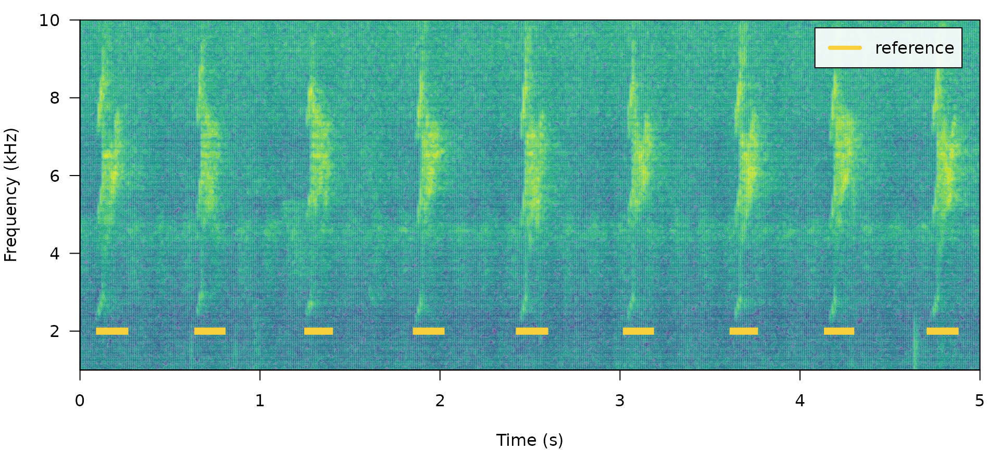
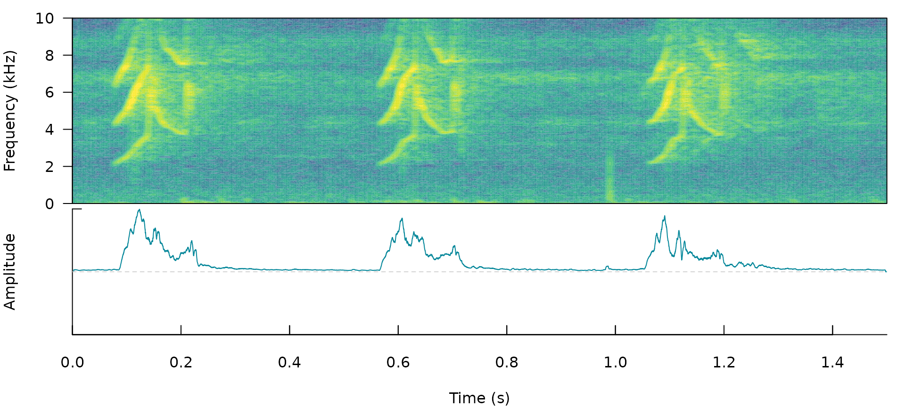
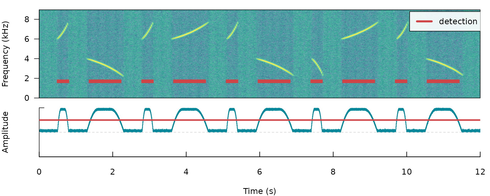
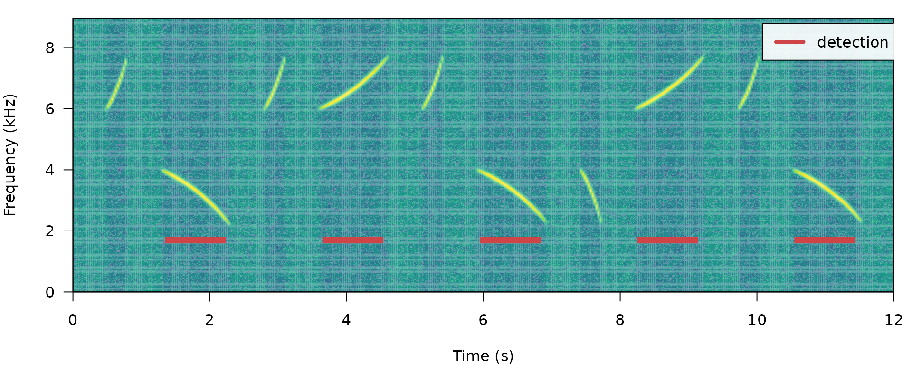
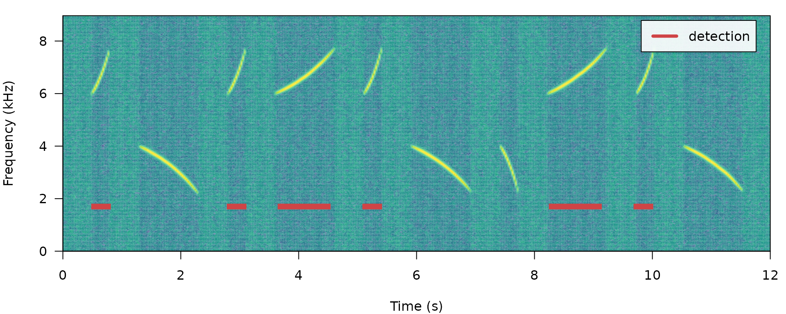
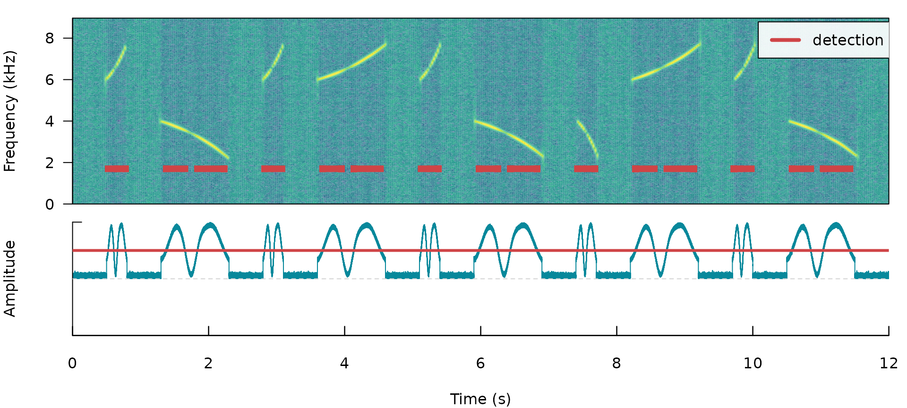
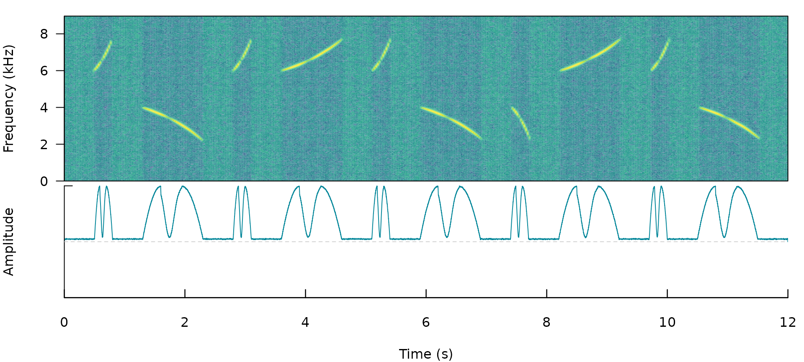
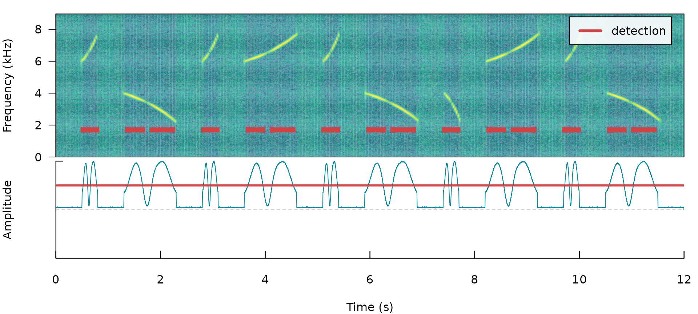
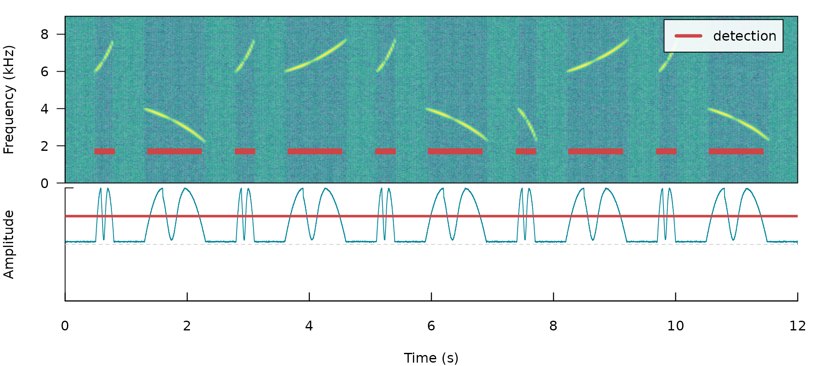
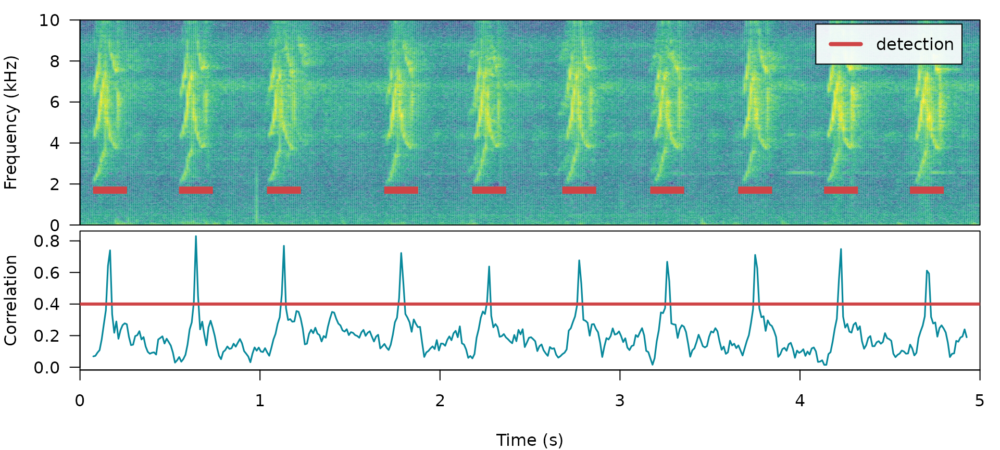

ohun: optimizing acoustic signal detection
Marcelo Araya-Salas, PhD
“2022-01-11”
Source: vignettes/ohun.Rmd
ohun.Rmd
ohun is intended to facilitate the automatic detection of acoustic signals, providing functions to diagnose and optimize detection routines. Detections from other software can also be explored and optimized.
The main features of the package are:
- The use of reference annotations for detection optimization and diagnostic
- The use of signal detection theory indices to evaluate detection performance
- Batch processing of sound files for improving computational performance
The package offers functions for:
- Diagnose detection performance
- Optimize detection routines based on reference annotations
- Energy-based detection
- Template-based detection
All functions allow the parallelization of tasks, which distributes the tasks among several processors to improve computational efficiency. The package works on sound files in ‘.wav’, ‘.mp3’, ‘.flac’ and ‘.wac’ format.
To install the latest developmental version from github you will need the R package devtools:
# install pacakge
devtools::install_github("maRce10/ohun")
#load package
library(ohun)
Automatic signal detection
Finding the position of signals in a sound file is a challenging task. ohun offers two methods for automatic signal detection: template-based and energy-based detection. These methods are better suited for highly stereotyped or good signal-to-noise ratio (SNR) signals, respectively. If the target signals don’t fit these requirements, more elaborated methods (i.e. machine learning approaches) are warranted:

Still, a detection run using other software can be optimized with the tools provided in ohun.
Signal detection theory applied to bioacoustics
Broadly speaking, signal detection theory deals with the process of recovering signals (i.e. target signals) from background noise (not necessarily acoustic noise) and it’s widely used for optimizing this decision making process in the presence of uncertainty. During a detection routine, the detected ‘items’ can be classified into 4 classes:
- True positives (TPs): signals correctly identified as ‘signal’
- False positives (FPs): background noise incorrectly identified as ‘signal’
- False negatives (FNs): signals incorrectly identified as ‘background noise’
- True negatives (TNs): background noise correctly identified as ‘background noise’
Several additional indices derived from these indices are used to evaluate the performance of a detection routine. These are two useful indices in the context of acoustic signal detection included in ohun:
- Sensitivity: proportion of target signals that were detected (a.k.a. true positive rate or recall; TPs / (TPs + FNs))
- Specificity: proportion of detected items that correspond to target signals ((TPs + FNs) / (TPs + FPs)). This definition differs from more traditional ones that focus on true negative occurrences. In our case it refers to the specificity to target signals.
(Metrics that make use of ‘true negatives’ cannot be easily applied in the context of acoustic signal detection as noise cannot always be partitioned in discrete units)
A perfect detection will have no false positives or false negatives, which will result in both sensitivity and specificity equal to 1. However, perfect detection cannot always be reached and some compromise between detecting all target signals plus some noise (sensitivity = 1 & specificity < 1) and detecting only target signals but not all of them (sensitivity < 1 & specificity = 1) is warranted. The right balance between these two extremes will be given by the relative costs of missing signals and mistaking noise for signals. Hence, these indices provide an useful framework for diagnosing and optimizing the performance of a detection routine.
The package ohun provides a set of tools to evaluate the performance of an acoustic signal detection based on the indices described above. To accomplish this, the result of a detection routine is compared against a reference table containing the time position of all target signals in the sound files. The package comes with an example reference table containing annotations of long-billed hermit hummingbird songs from two sound files (also supplied as example data: ‘lbh1’ and ‘lbh2’), which can be used to illustrate detection performance evaluation. The example data can be explored as follows:
# load example data
data("lbh1", "lbh2", "lbh_reference")
lbh_reference## Object of class 'selection_table'
## * The output of the following call:
## warbleR::selection_table(X = lbh_reference)
##
## Contains:
## * A selection table data frame with 19 rows and 6 columns:
## |sound.files | selec| start| end| bottom.freq| top.freq|
## |:-----------|-----:|------:|------:|-----------:|--------:|
## |lbh2.wav | 1| 0.1092| 0.2482| 2.2954| 8.9382|
## |lbh2.wav | 2| 0.6549| 0.7887| 2.2954| 9.0426|
## |lbh2.wav | 3| 1.2658| 1.3856| 2.2606| 9.0774|
## |lbh2.wav | 4| 1.8697| 2.0053| 2.1911| 8.9035|
## |lbh2.wav | 5| 2.4418| 2.5809| 2.1563| 8.6600|
## |lbh2.wav | 6| 3.0368| 3.1689| 2.2259| 8.9382|
## ... and 13 more row(s)
##
## * A data frame (check.results) generated by check_sels() (as attribute)
## created by warbleR 1.1.27
This is a ‘selection table’, an object class provided by the package warbleR ( see selection_table for details). Selection tables are basically data frames in which the contained information has been double-checked (using selection_table). But they behave pretty much as data frames and can be easily converted to data frames:
# convert to data frame
as.data.frame(lbh_reference)## sound.files selec start end bottom.freq top.freq
## 1 lbh2.wav 1 0.109161 0.2482449 2.2954 8.9382
## 2 lbh2.wav 2 0.654921 0.7887232 2.2954 9.0426
## 3 lbh2.wav 3 1.265850 1.3855678 2.2606 9.0774
## 4 lbh2.wav 4 1.869705 2.0052678 2.1911 8.9035
## 5 lbh2.wav 5 2.441769 2.5808529 2.1563 8.6600
## 6 lbh2.wav 6 3.036825 3.1688667 2.2259 8.9382
## 7 lbh2.wav 7 3.628617 3.7465742 2.3302 8.6252
## 8 lbh2.wav 8 4.153288 4.2818085 2.2954 8.4861
## 9 lbh2.wav 9 4.723673 4.8609963 2.3650 8.6948
## 10 lbh1.wav 10 0.088118 0.2360047 1.9824 8.4861
## 11 lbh1.wav 11 0.572290 0.7201767 2.0520 9.5295
## 12 lbh1.wav 12 1.056417 1.1972614 2.0868 8.4861
## 13 lbh1.wav 13 1.711338 1.8680274 1.9824 8.5905
## 14 lbh1.wav 14 2.190249 2.3416568 2.0520 8.5209
## 15 lbh1.wav 15 2.697143 2.8538324 1.9824 9.2513
## 16 lbh1.wav 16 3.181315 3.3344833 1.9129 8.4861
## 17 lbh1.wav 17 3.663719 3.8133662 1.8781 8.6948
## 18 lbh1.wav 18 4.140816 4.3045477 1.8433 9.2165
## 19 lbh1.wav 19 4.626712 4.7851620 1.8085 8.9035
All ohun functions that work with this kind of data can take both selection tables and data frames. Spectrograms with highlighted signals from a selection table can be plotted with the function label_spectro() (this function only plots one wave object at the time):
# save sound file
writeWave(lbh1, file.path(tempdir(), "lbh1.wav"))
# save sound file
writeWave(lbh2, file.path(tempdir(), "lbh2.wav"))
# print spectrogram
label_spectro(wave = lbh1, reference = lbh_reference[lbh_reference$sound.files ==
"lbh1.wav", ], hop.size = 10, ovlp = 50, flim = c(1, 10))
# print spectrogram
label_spectro(wave = lbh2, reference = lbh_reference[lbh_reference$sound.files ==
"lbh2.wav", ], hop.size = 10, ovlp = 50, flim = c(1, 10))
The function diagnose_detection() evaluates the performance of a detection routine by comparing it to a reference table. For instance, a perfect detection is given by comparing lbh_reference to itself:
lbh1_reference <- lbh_reference[lbh_reference$sound.files == "lbh1.wav", ]
# diagnose
diagnose_detection(reference = lbh1_reference, detection = lbh1_reference)[, c(1:3,
7:8)]## true.positives false.positives false.negatives sensitivity specificity
## 1 10 0 0 1 1
We will work mostly with a single sound file for convenience but the functions can work on several sound files at the time. The files should be found in a single working directory. Although the above example is a bit silly, it shows the basic diagnostic indices, which include basic detection theory indices (‘true.positives’, ‘false.positives’, ‘false.negatives’, ‘sensitivity’ and ‘specificity’) mentioned above. We can play around with the reference table to see how these indices can be used to spot imperfect detection routines (and hopefully improve them!). For instance, we can remove some signals to see how this is reflected in the diagnostics. Getting rid of some rows in ‘detection’, simulating a detection with some false negatives, will affect the sensitivity but not the specificity:
# create new table
lbh1_detection <- lbh1_reference[3:9, ]
# print spectrogram
label_spectro(wave = lbh1, reference = lbh1_reference, detection = lbh1_detection,
hop.size = 10, ovlp = 50, flim = c(1, 10))
# diagnose
diagnose_detection(reference = lbh1_reference, detection = lbh1_detection)[, c(1:3,
7:8)]## true.positives false.positives false.negatives sensitivity specificity
## 1 7 0 3 0.7 1
Having some additional signals not in reference will do the opposite, reducing specificity but not sensitivity. We can do this simply by switching the tables:
# print spectrogram
label_spectro(wave = lbh1, detection = lbh1_reference, reference = lbh1_detection,
hop.size = 10, ovlp = 50, flim = c(1, 10))
# diagnose
diagnose_detection(reference = lbh1_detection, detection = lbh1_reference)[, c(1:3,
7:8)]## true.positives false.positives false.negatives sensitivity specificity
## 1 7 3 0 1 0.7
The function offers three additional diagnose metrics:
- Split positives: target signals overlapped by more than 1 detecion
- Merged positives: number of cases in which 2 or more target signals in ‘reference’ were overlapped by the same detection
- Proportional overlap of true positives: ratio of the time overlap of true positives with its corresponding signal in the reference table
In a perfect detection routine split and merged positives should be 0 while proportional overlap should be 1. We can shift the start of signals a bit to reflect a detection in which there is some mismatch to the reference table regarding to the time location of signals:
# create new table
lbh1_detection <- lbh1_reference
# add 'noise' to start
set.seed(18)
lbh1_detection$start <- lbh1_detection$start + rnorm(nrow(lbh1_detection), mean = 0,
sd = 0.1)
## print spectrogram
label_spectro(wave = lbh1, reference = lbh1_reference, detection = lbh1_detection,
hop.size = 10, ovlp = 50, flim = c(1, 10))
# diagnose
diagnose_detection(reference = lbh1_reference, detection = lbh1_detection)## true.positives false.positives false.negatives split.positives
## 1 10 0 0 0
## merged.positives overlap.to.true.positives sensitivity specificity
## 1 0 0.5280701 1 1
In addition, the following diagnostics related to the duration of the signals can also be returned by setting time.diagnostics = TRUE. Here we tweak the reference and detection data just to have some false positives and false negatives:
# diagnose with time diagnostics
diagnose_detection(reference = lbh1_reference[-1, ], detection = lbh1_detection[-10,
], time.diagnostics = TRUE)## true.positives false.positives false.negatives split.positives
## 1 8 1 1 0
## merged.positives overlap.to.true.positives mean.duration.true.positives
## 1 0 0.6103203 0.1387504
## mean.duration.false.positives mean.duration.false.negatives
## 1 0.05524073 0.15845
## proportional.duration.true.positives sensitivity specificity
## 1 1 0.8888889 0.8888889
These additional metrics can be used to further filter out undesired signals based on their duration (for instance in a energy-based detection as in energy_detector(), explained below).
Diagnostics can also be detailed by sound file:
# diagnose by sound file
diagnostic <- diagnose_detection(reference = lbh1_reference, detection = lbh1_detection,
by.sound.file = TRUE)
diagnostic## sound.files true.positives false.positives false.negatives split.positives
## 1 lbh1.wav 10 0 0 0
## merged.positives overlap.to.true.positives sensitivity specificity
## 1 0 0.5280701 1 1
These diagnostics can be summarized (as in the default diagnose_detection() output) with the function summarize_diagnostic():
# summarize
summarize_diagnostic(diagnostic)## true.positives false.positives false.negatives split.positives
## 1 10 0 0 0
## merged.positives overlap.to.true.positives sensitivity specificity
## 1 0 0.5280701 1 1
Detecting signals with ohun
Energy-based detection
This detector uses amplitude envelopes to infer the position of signals. Amplitude envelopes are representations of the variation in energy through time. The following code plots an amplitude envelope along with the spectrogram for the example data lbh1:
# plot spectrogram and envelope
label_spectro(wave = cutw(lbh1, from = 0, to = 1.5, output = "Wave"), ovlp = 90,
hop.size = 10, flim = c(0, 10), envelope = TRUE)
This type of detector doesn’t require highly stereotyped signals, although they work better on high quality recordings in which the amplitude of target signals is higher than the background noise (i.e. high signal-to-noise ratio). The function ernergy_detector() performs this type of detection.
How it works
We can understand how to use ernergy_detector() using simulated signals. We will do that using the function simulate_songs() from warbleR. In this example we simulate a recording with 10 sounds with two different frequency ranges and durations:
# install this package first if not installed install.packages('Sim.DiffProc')
# Creating vector for duration
durs <- rep(c(0.3, 1), 5)
# Creating simulated song
set.seed(12)
simulated_1 <- warbleR::simulate_songs(n = 10, durs = durs, freqs = 5, sig2 = 0.01,
gaps = 0.5, harms = 1, bgn = 0.1, path = tempdir(), file.name = "simulated_1",
selec.table = TRUE, shape = "cos", fin = 0.3, fout = 0.35, samp.rate = 18)$wave
The function call saves a ‘.wav’ sound file in a temporary directory (tempdir()) and also returns a wave object in the R environment. This outputs will be used to run energy-based detection and creating plots, respectively. This is how the spectrogram and amplitude envelope of the simulated recording look like:
# plot spectrogram and envelope
label_spectro(wave = simulated_1, env = TRUE, fastdisp = TRUE)
Note that the amplitude envelope shows a high signal-to-noise ratio of the signals, which is ideal for energy-based detection. This can be conducted using ernergy_detector() as follows:
# run detection
detection <- energy_detector(files = "simulated_1.wav", bp = c(2, 8), threshold = 50,
smooth = 150, path = tempdir())
# plot spectrogram and envelope
label_spectro(wave = simulated_1, envelope = TRUE, detection = detection, threshold = 50)
The output is a selection table:
detection## Object of class 'selection_table'
## * The output of the following call:
## energy_detector(files = "simulated_1.wav", path = tempdir(),
## bp = c(2, 8), smooth = 150, threshold = 50)
##
## Contains:
## * A selection table data frame with 10 rows and 5 columns:
## |sound.files | duration| selec| start| end|
## |:---------------|--------:|-----:|------:|------:|
## |simulated_1.wav | 0.2328| 1| 0.5309| 0.7638|
## |simulated_1.wav | 0.7947| 2| 1.3955| 2.1901|
## |simulated_1.wav | 0.2334| 3| 2.8308| 3.0642|
## |simulated_1.wav | 0.7944| 4| 3.6955| 4.4899|
## |simulated_1.wav | 0.2333| 5| 5.1307| 5.3641|
## |simulated_1.wav | 0.7945| 6| 5.9956| 6.7901|
## ... and 4 more row(s)
##
## * A data frame (check.results) generated by check_sels() (as attribute)
## created by warbleR 1.1.27Now we will make use of some additional arguments to filter out specific signals based on their structural features. For instance we can use the argument minimum.duration to provide a time treshold (in ms) to exclude short signals and keep only the longest signals:
# run detection
detection <- energy_detector(files = "simulated_1.wav", bp = c(1, 8), threshold = 50,
min.duration = 500, smooth = 150, path = tempdir())
# plot spectrogram
label_spectro(wave = simulated_1, detection = detection)
We can use the argument max.duration (also in ms) to exclude long signals and keep the short ones:
# run detection
detection <- energy_detector(files = "simulated_1.wav", bp = c(1, 8), threshold = 50,
smooth = 150, max.duration = 500, path = tempdir())
# plot spectrogram
label_spectro(wave = simulated_1, detection = detection)
We can also focus the detection on specific frequency ranges using the argument bp (bandpass). By setting bp = c(5, 8) only those signals found within that frequency range (5-8 kHz) will be detected, which excludes signals below 5 kHz:
# Detecting
detection <- energy_detector(files = "simulated_1.wav", bp = c(5, 8), threshold = 50,
smooth = 150, path = tempdir())
# plot spectrogram
label_spectro(wave = simulated_1, detection = detection)
The same logic can be applied to detect those signals found below 5 kHz. We just need to set the upper bound of the band pass filter below the range of the higher frequency signals (for instance bp = (0, 6)):
# Detect
detection <- energy_detector(files = "simulated_1.wav", bp = c(0, 6), threshold = 50,
min.duration = 1, smooth = 150, path = tempdir())
# plot spectrogram
label_spectro(wave = simulated_1, detection = detection)
Amplitude modulation (variation in amplitude across a signal) can be problematic for detection based on amplitude envelopes. We can also simulate some amplitude modulation using warbleR::simulate_songs():
# Creating simulated song
set.seed(12)
# Creating vector for duration
durs <- rep(c(0.3, 1), 5)
sim_2 <- sim_songs(n = 10, durs = durs, freqs = 5, sig2 = 0.01, gaps = 0.5, harms = 1,
bgn = 0.1, path = tempdir(), file.name = "simulated_2", selec.table = TRUE, shape = "cos",
fin = 0.3, fout = 0.35, samp.rate = 18, am.amps = c(1, 2, 3, 2, 0.1, 2, 3, 3,
2, 1))
# extract wave object and selection table
simulated_2 <- sim_2$wave
sim2_sel_table <- sim_2$selec.table
# plot spectrogram
label_spectro(wave = simulated_2, envelope = TRUE)
When signals have strong amplitude modulation they can be split during detection:
# detect sounds
detection <- energy_detector(files = "simulated_2.wav", threshold = 50, path = tempdir())
# plot spectrogram
label_spectro(wave = simulated_2, envelope = TRUE, threshold = 50, detection = detection)
There are two arguments that can deal with this: holdtime and smooth. hold.time allows to merge split signals that are found within a given time range (in ms). This time range should be high enough to merge things belonging to the same signal but not too high so it merges different signals. For this example a hold.time of 200 ms can do the trick (we know gaps between signals are ~0.5 s long):
# detect sounds
detection <- energy_detector(files = "simulated_2.wav", threshold = 50, min.duration = 1,
path = tempdir(), hold.time = 200)
# plot spectrogram
label_spectro(wave = simulated_2, envelope = TRUE, threshold = 50, detection = detection)
smooth works by merging the amplitude envelope ‘hills’ of the split signals themselves. It smooths envelopes by applying a sliding window averaging of amplitude values. It’s given in ms of the window size. A smooth of 350 ms can merged back split signals from our example:
# detect sounds
detection <- energy_detector(files = "simulated_2.wav", threshold = 50, min.duration = 1,
path = tempdir(), smooth = 350)
# plot spectrogram
label_spectro(wave = simulated_2, envelope = TRUE, threshold = 50, detection = detection,
smooth = 350)
Optimizing energy-based detection
This last example using smooth can be used to showcase how the tunning parameters can be optimized. As explained above, to do this we need a reference table that contains the time position of the target signals. The function optimize_energy_detector() can be used finding the optimal parameter values. We must provide the range of parameter values that will be evaluated:
optim_detection <- optimize_energy_detector(reference = sim2_sel_table, files = "simulated_2.wav",
threshold = 50, min.duration = 1, path = tempdir(), smooth = c(100, 250, 350))## 3 combinations will be evaluated:
optim_detection[, c(1, 2:5, 7:12, 17:18)]## threshold smooth hold.time min.duration max.duration true.positives
## 1 50 100 0 1 Inf 10
## 2 50 250 0 1 Inf 10
## 3 50 350 0 1 Inf 10
## false.positives false.negatives split.positives merged.positives
## 1 0 0 10 0
## 2 0 0 5 0
## 3 0 0 0 0
## overlap.to.true.positives sensitivity specificity
## 1 0.4174857 1 1
## 2 0.5287953 1 1
## 3 0.8719212 1 1
The output contains the combination of parameters used at each iteration as well as the corresponding diagnose indices. In this case all combinations generate a good detection (sensitivity & specificity = 1). However, only the routine with the highest smooth (last row) has no split signals (‘split.positive’ column). It also shows a better overlap to the reference signals (‘overlap.to.true.positives’ closer to 1).
In addition, there are two complementary functions for optimizing energy-based detection routines: feature_reference() and merge_overlaps(). feature_reference() allow user to get a sense of the time and frequency characteristics of a reference table. This information can be used to determine the range of tuning parameter values during optimization. This is the output of the function applied to lbh_reference:
feature_reference(reference = lbh_reference, path = tempdir())## min mean max
## sel.duration 0.1179572 0.142605 0.1637317
## gap.duration 0.6249714 0.6809194 0.8116104
## duty.cycle 0.2709495 0.2366186 0.3052803
## bottom.freq 1.8085 NA NA
## top.freq NA NA 9.5295
Features related to selection duration can be used to set the ‘max.duration’ and ‘min.duration’ values, frequency related features can inform banpass values, gap related features inform hold time values and duty cycle can be used to evaluate performance. Note that duty cycle is not included as a diagnostic in other functions but it can also be estimated on detections using feature_reference.
merge_overlaps() finds time-overlapping selections in reference tables and collapses them into a single selection. Overlapping selections would more likely appear as a single amplitude ‘hill’ and thus would be detected as a single signal. So merge_overlaps() can be useful to prepare references in a format representing a more realistic expectation of how a pefect energy detection routine would look like.
Template-based detection
This detection method is better suited for highly stereotyped signals. As it doesn’t depend on the signal-to-noise ratio it’s more robust to higher levels of background noise. The procedure is divided in two steps:
- Estimating the cross-correlation scores of templates along sound files (
template_correlator())
- Detecting signals by applying a correlation threshold (
template_detector())
This method can be used to detect the signals in the example ‘lbh1’ data as follows:
# get correlations
correlations <- template_correlator(templates = lbh1_reference[1, ], files = "lbh1.wav",
path = tempdir())
The output is an object of class ‘template_correlations’, with its own printing method:
# print
correlations## Object of class 'template_correlations'
## * The output of the following template_correlator() call:
## template_correlator(templates = lbh1_reference[1, ], files = "lbh1.wav",
## path = tempdir())
## * Contains 1 correlation score vector(s) from 1 template(s):
## lbh1.wav-10
## ... and 1 sound files(s):
## lbh1.wav
## * Created by ohun 0.1.0
This object can then be used to detect signals using template_detector():
# run detection
detection <- template_detector(template.correlations = correlations, threshold = 0.4)
detection## Object of class 'selection_table'
## * The output of the following call:
## template_detector(template.correlations = correlations, threshold = 0.4)
##
## Contains:
## * A selection table data frame with 10 rows and 6 columns:
## |sound.files | selec| start| end|template | scores|
## |:-----------|-----:|------:|------:|:-----------|------:|
## |lbh1.wav | 1| 0.0931| 0.2410|lbh1.wav-10 | 0.7403|
## |lbh1.wav | 2| 0.5702| 0.7180|lbh1.wav-10 | 0.8300|
## |lbh1.wav | 3| 1.0589| 1.2067|lbh1.wav-10 | 0.7688|
## |lbh1.wav | 4| 1.7105| 1.8583|lbh1.wav-10 | 0.7234|
## |lbh1.wav | 5| 2.1992| 2.3470|lbh1.wav-10 | 0.6378|
## |lbh1.wav | 6| 2.6995| 2.8474|lbh1.wav-10 | 0.6768|
## ... and 4 more row(s)
##
## * A data frame (check.results) generated by check_sels() (as attribute)
## created by warbleR 1.1.27
The output can be explored by plotting the spectrogram along with the detection and correlation scores:
# plot spectrogram
label_spectro(wave = lbh1, detection = detection, template.correlation = correlations$`lbh1.wav-10/lbh1.wav`,
flim = c(0, 10), threshold = 0.4, hop.size = 10, ovlp = 50)
The performance can be evaluated using diagnose_detection():
# diagnose
diagnose_detection(reference = lbh1_reference, detection = detection)## true.positives false.positives false.negatives split.positives
## 1 10 0 0 0
## merged.positives overlap.to.true.positives sensitivity specificity
## 1 0 0.9520091 1 1
Optimizing template-based detection
The function optimize_template_detector() allows to evaluate the performance under different correlation thresholds:
# run optimization
optimization <- optimize_template_detector(template.correlations = correlations,
reference = lbh1_reference, threshold = seq(0.1, 0.5, 0.1))## 5 thresholds will be evaluated:
# print output
optimization## threshold templates true.positives false.positives false.negatives
## 1 0.1 lbh1.wav-10 10 44 0
## 2 0.2 lbh1.wav-10 10 20 0
## 3 0.3 lbh1.wav-10 10 1 0
## 4 0.4 lbh1.wav-10 10 0 0
## 5 0.5 lbh1.wav-10 10 0 0
## split.positives merged.positives overlap.to.true.positives sensitivity
## 1 10 0 0.5264176 1
## 2 10 0 0.6308558 1
## 3 5 0 0.8431567 1
## 4 0 0 0.9520091 1
## 5 0 0 0.9520091 1
## specificity
## 1 0.1851852
## 2 0.3333333
## 3 0.9090909
## 4 1.0000000
## 5 1.0000000
Additional threshold values can be evaluated without having to run it all over again. We just need to supplied the output from the previous run with the argument previous.output (the same trick can be done when optimizing an energy-based detection):
# run optimization
optimize_template_detector(template.correlations = correlations, reference = lbh1_reference,
threshold = c(0.6, 0.7), previous.output = optimization)## 2 thresholds will be evaluated:## threshold templates true.positives false.positives false.negatives
## 1 0.1 lbh1.wav-10 10 44 0
## 2 0.2 lbh1.wav-10 10 20 0
## 3 0.3 lbh1.wav-10 10 1 0
## 4 0.4 lbh1.wav-10 10 0 0
## 5 0.5 lbh1.wav-10 10 0 0
## 6 0.6 lbh1.wav-10 10 0 0
## 7 0.7 lbh1.wav-10 6 0 4
## split.positives merged.positives overlap.to.true.positives sensitivity
## 1 10 0 0.5264176 1.0
## 2 10 0 0.6308558 1.0
## 3 5 0 0.8431567 1.0
## 4 0 0 0.9520091 1.0
## 5 0 0 0.9520091 1.0
## 6 0 0 0.9520091 1.0
## 7 0 0 0.9507387 0.6
## specificity
## 1 0.1851852
## 2 0.3333333
## 3 0.9090909
## 4 1.0000000
## 5 1.0000000
## 6 1.0000000
## 7 1.0000000
In this case several threshold values can achieved an optimal detection.
Detecting several templates
Several templates can be used within the same call. Here we correlate two templates on the two example sound files, taking one template from each sound file:
# get correlations
correlations <- template_correlator(templates = lbh_reference[c(1, 10), ], files = c("lbh1.wav",
"lbh2.wav"), path = tempdir())
# run detection
detection <- template_detector(template.correlations = correlations, threshold = 0.5)
Note that in these cases we can get the same signal detected several times (duplicates), one by each template. We can check if that is the case just by diagnosing the detection:
# diagnose
diagnose_detection(reference = lbh_reference, detection = detection)## true.positives false.positives false.negatives split.positives
## 1 19 0 0 4
## merged.positives overlap.to.true.positives sensitivity specificity
## 1 0 0.9565014 1 1
Duplicates are shown as split positives. Fortunately, we can leave a single detected signal by leaving only those with the highest correlation. To do this we first need to label each row in the detection using label_detection() and then remove duplicates using filter_detection():
# labeling detection
labeled <- label_detection(reference = lbh_reference, detection = detection)This function adds a column (‘detection.class’) with the class label for each row:
table(labeled$detection.class)##
## true.positive true.positive (split)
## 15 8
Now we can filter out duplicates and diagnose the detection again, telling the function to select a single row per duplicate using the correlation score as a criterium (by = "scores", this column is part of the template_detector() output):
# filter
filtered <- filter_detection(detection = labeled, by = "scores")
# diagnose
diagnose_detection(reference = lbh_reference, detection = filtered)## true.positives false.positives false.negatives split.positives
## 1 19 0 0 0
## merged.positives overlap.to.true.positives sensitivity specificity
## 1 0 0.9501523 1 1
We successfully get rid of duplicates and detected every single target signal.
Improving detection speed
Detection routines can take a long time when working with large amounts of acoustic data (e.g. large sound files and/or many sound files). These are some useful points to keep in mine when trying to make a routine more time-efficient:
- Always test procedures on small data subsets
-
template_detector()is faster thanenergy_detector() - Parallelization (see
parallelargument in most functions) can significantly speed-up routines, but works better on Unix-based operating systems (linux and mac OS) - Sampling rate matters: detecting signals on low sampling rate files goes faster, so we should avoid having nyquist frequencies (sampling rate / 2) way higher than the highest frequency of the target signals (sound files can be downsampled using warbleR’s
fix_sound_files()) - Large sound files can make the routine crash, use
split_acoustic_data()to split both reference tables and files into shorter clips. - Think about using a computer with lots of RAM memory or a computer cluster for working on large amounts of data
-
thinningargument (which reduces the size of the amplitude envelope) can also speed-upenergy_detector()
Additional tips
- Use your knowledge about the signal structure to determine the initial range for the tuning parameters in a detection optimization routine
- If people have a hard time figuring out where a target signal occurs in a recording, detection algorithms will also have a hard time
- Several templates representing the range of variation in signal structure can be used to detect semi-stereotyped signals
- Make sure reference tables contain all target signals and only the target signals. The performance of the detection cannot be better than the reference itself.
- Avoid having overlapping signals or several signals as a single one (like a multi-syllable vocalization) in the reference table when running an energy-based detector
- Low-specificity can be improved by training a classification model (e.g. random forest) to tell signals from noise
Please cite ohun like this:
Araya-Salas, M. (2021), ohun: automatic detection of acoustic signals. R package version 0.1.0.
References
- Araya-Salas, M. (2021), ohun: automatic detection of acoustic signals. R package version 0.1.0.
- Araya-Salas M, Smith-Vidaurre G (2017) warbleR: An R package to streamline analysis of animal acoustic signals. Methods Ecol Evol 8:184-191.
- Khanna H., Gaunt S.L.L. & McCallum D.A. (1997). Digital spectrographic cross-correlation: tests of sensitivity. Bioacoustics 7(3): 209-234.
- Macmillan, N. A., & Creelman, C.D. (2004). Detection theory: A user’s guide. Psychology press.
Session information
## R version 4.1.0 (2021-05-18)
## Platform: x86_64-pc-linux-gnu (64-bit)
## Running under: Ubuntu 20.04.2 LTS
##
## Matrix products: default
## BLAS: /usr/lib/x86_64-linux-gnu/atlas/libblas.so.3.10.3
## LAPACK: /usr/lib/x86_64-linux-gnu/atlas/liblapack.so.3.10.3
##
## locale:
## [1] LC_CTYPE=pt_BR.UTF-8 LC_NUMERIC=C
## [3] LC_TIME=es_CR.UTF-8 LC_COLLATE=pt_BR.UTF-8
## [5] LC_MONETARY=es_CR.UTF-8 LC_MESSAGES=pt_BR.UTF-8
## [7] LC_PAPER=es_CR.UTF-8 LC_NAME=C
## [9] LC_ADDRESS=C LC_TELEPHONE=C
## [11] LC_MEASUREMENT=es_CR.UTF-8 LC_IDENTIFICATION=C
##
## attached base packages:
## [1] stats graphics grDevices utils datasets methods base
##
## other attached packages:
## [1] ohun_0.1.0 warbleR_1.1.27 NatureSounds_1.0.4 knitr_1.37
## [5] seewave_2.1.8 tuneR_1.3.3.1
##
## loaded via a namespace (and not attached):
## [1] Rcpp_1.0.7 fftw_1.0-6.1 assertthat_0.2.1 rprojroot_2.0.2
## [5] digest_0.6.29 utf8_1.2.2 R6_2.5.1 Sim.DiffProc_4.8
## [9] signal_0.7-7 evaluate_0.14 ggplot2_3.3.5 highr_0.9
## [13] pillar_1.6.4 rlang_0.4.12 jquerylib_0.1.4 rmarkdown_2.9
## [17] pkgdown_1.6.1 textshaping_0.3.5 desc_1.3.0 stringr_1.4.0
## [21] RCurl_1.98-1.5 munsell_0.5.0 proxy_0.4-26 Deriv_4.1.3
## [25] compiler_4.1.0 xfun_0.29 pkgconfig_2.0.3 systemfonts_1.0.2
## [29] htmltools_0.5.2 tidyselect_1.1.1 tibble_3.1.6 gridExtra_2.3
## [33] dtw_1.22-3 fansi_1.0.0 viridisLite_0.4.0 crayon_1.4.2
## [37] dplyr_1.0.7 MASS_7.3-54 bitops_1.0-7 grid_4.1.0
## [41] jsonlite_1.7.2 gtable_0.3.0 lifecycle_1.0.1 DBI_1.1.1
## [45] magrittr_2.0.1 formatR_1.11 scales_1.1.1 stringi_1.7.6
## [49] cachem_1.0.5 pbapply_1.5-0 viridis_0.6.2 fs_1.5.0
## [53] bslib_0.2.5.1 ellipsis_0.3.2 ragg_1.1.3 vctrs_0.3.8
## [57] generics_0.1.0 rjson_0.2.21 tools_4.1.0 glue_1.6.0
## [61] purrr_0.3.4 parallel_4.1.0 fastmap_1.1.0 yaml_2.2.1
## [65] colorspace_2.0-2 memoise_2.0.0 sass_0.4.0